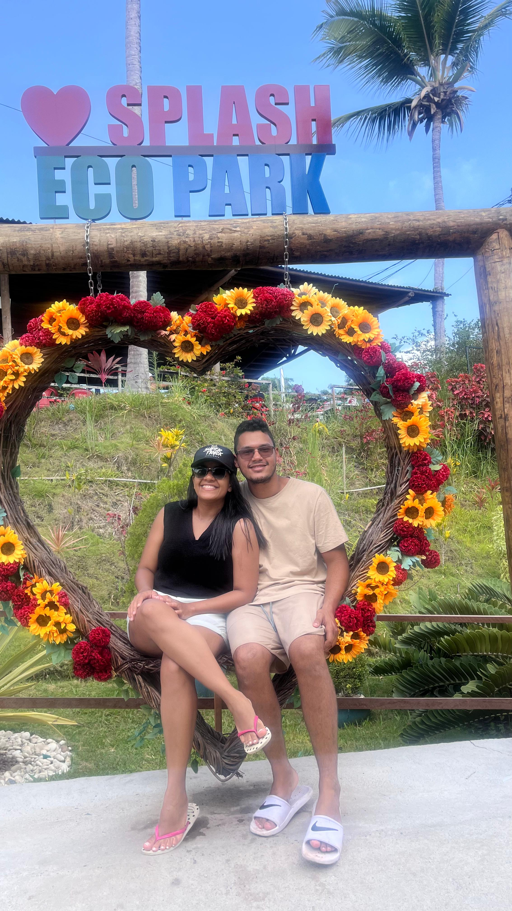

Fiz esse site para demostrar o amor que tenho por nós ainda mais agora, depois desses trinta dias sem ter contato eu percebi que só aumentou o sentimento que tenho por você e quero que esse sentimento dure pelo resto de nossas vidas ou até Jesus voltar.
Obrigado meu amor por estar comigo nos dias bons nas dificuldades e nos momentos difíceis, você sempre será meu ponto seguro e minha calmaria.
No começo éramos apenas amigos mas hoje você da cor a nossa historia, minha maior sorte foi ter você na minha vida.
Sinto que todas as vezes que te vejo você está mais linda do que nunca, e me dá vontade de abraçar e não soltar nunca mais, o desejo de estar com você me faz suportar coisas que eu achava que seria impossível, e eu sei que com você esse sentimento é igual, fomos fortes e sei que essa luta que vencemos é só o começo desse período mas tenho a certeza que daqui pra frente tudo será mais fácil do que nunca, e suportaremos o processo por que nossa vitória já foi escrita por DEUS.
Por que a palavra de Deus diz:
“— E afirmo a vocês que isto também é verdade: todas as vezes que dois de vocês que estão na terra pedirem a mesma coisa em oração, isso será feito pelo meu Pai, que está no céu.”
Mateus 18:19
Oro para que Deus nos abençoe e nos proteja de tudo e de todo mal que possa acontecer.
Eu Te Amo Meu Amor ❤️

Algumas fotos dessa nossa longa jornada que tivemos ate aqui, e relembra os momentos bons que tivemos juntos que e so um começo de uma vida inteira.
Contexto
Essa foi uma forma NERD e diferente que eu achei de me expressar kkk
espero que tenha gostado e se surpreendido ❤️